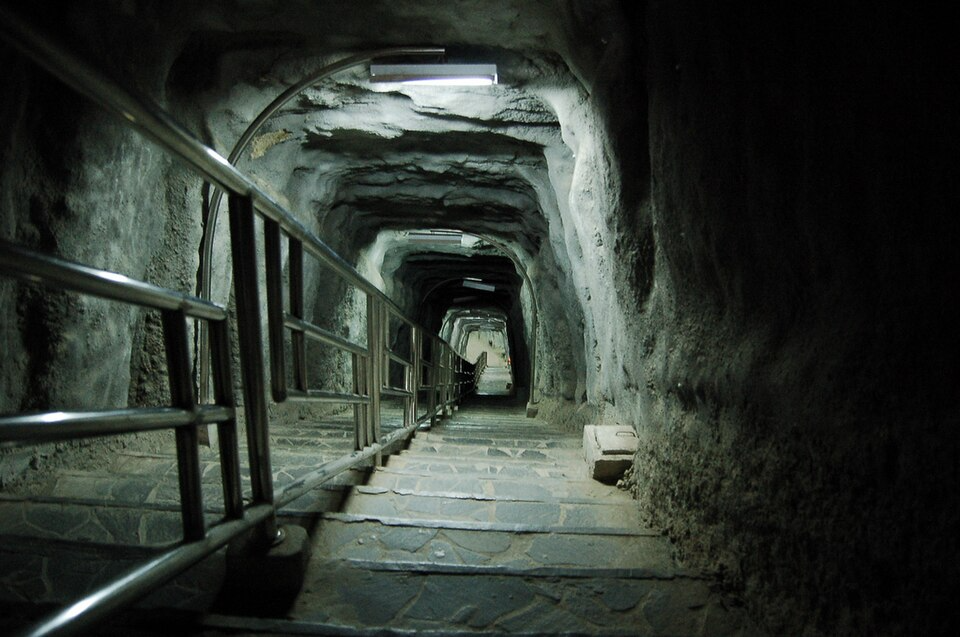

Ngarai Sianok dan Lubang Jepang adalah dua destinasi ikonik di Bukittinggi, Sumatera Barat, yang saling berdekatan dan menawarkan kombinasi unik antara keindahan alam yang memukau dan pelajaran sejarah yang mendalam.
Panorama Ngarai Sianok: Si "Grand Canyon Indonesia"
Ngarai Sianok adalah sebuah lembah curam (ngarai) yang memanjang dan berkelok-kelok, membentang dari selatan Nagari Koto Gadang hingga Nagari Sianok Enam Suku. Jurangnya mencapai kedalaman rata-rata sekitar 100 meter, dengan lebar sekitar 200 meter, dan panjang sekitar 15 kilometer. Pemandangan ini terbentuk akibat proses tektonik (pergeseran lempeng bumi) yang dikenal sebagai Sesar Semangko, sebuah patahan yang memanjang di sepanjang Pulau Sumatera.
Dinding tebingnya yang curam didominasi oleh batuan sedimen tua dan vulkanik. Di dasar ngarai, mengalir Batang Sianok (Sungai Sianok) yang airnya jernih, menciptakan ekosistem subur.
Fungsi Utama :
Destinasi Wisata Utama: Menyajikan pemandangan alam spektakuler yang menjadi daya tarik utama Kota Bukittinggi
Laboratorium Alam (Geologis): Menjadi area penting untuk studi geologi, terutama mengenai aktivitas Sesar Semangko dan pembentukan lembah patahan.
Sumber Mata Pencaharian: Kawasan sungai dan lerengnya dimanfaatkan penduduk untuk pertanian, perikanan, dan aktivitas pariwisata berbasis alam.
Paru-Paru Kota: Vegetasi hijau yang lebat di lereng dan dasar ngarai berfungsi sebagai penghasil oksigen dan area konservasi.
Julukan Paling Populer :
Karena kemiripannya dengan lembah jurang raksasa yang curam, Ngarai Sianok sering dijuluki sebagai "Grand Canyon-nya Indonesia" atau "Lembah Pendiam" karena suasananya yang tenang dan megah.

Lubang Jepang: Saksi Bisu Kekejaman Perang Dunia II
Lubang Jepang adalah sebuah jaringan terowongan bawah tanah (bunker) yang dibangun oleh tentara pendudukan Jepang di Bukittinggi, terutama di kawasan yang kini dikenal sebagai Taman Panorama, menghadap langsung ke Ngarai Sianok. Pembangunannya dilakukan antara tahun 1942 hingga 1945, secara paksa (kerja paksa/ romusha) menggunakan tenaga rakyat Indonesia.
Terowongan ini memiliki panjang total yang diperkirakan mencapai 1.470 meter, dengan kedalaman sekitar 40-50 meter di bawah permukaan tanah.
Fungsi Utama :
Lubang Jepang memiliki fungsi yang sangat spesifik sebagai kompleks pertahanan dan markas militer pada masa Perang Dunia II, khususnya bagi tentara Jepang di Sumatera bagian tengah. Fungsinya meliputi:
Pusat Komando: Sebagai lokasi strategis untuk merencanakan operasi militer.
Gudang Amunisi: Tempat penyimpanan senjata, mesiu, dan perlengkapan perang.
Barak Prajurit: Tempat peristirahatan, tidur, dan fasilitas penunjang bagi ratusan tentara.
Tempat Penyiksaan dan Penjara: Digunakan untuk menahan, menginterogasi, dan bahkan mengeksekusi tawanan perang atau penduduk lokal yang menentang.
Struktur dan Ruang-Ruang Utama :
Lubang Jepang dirancang dengan tata ruang yang kompleks, masing-masing memiliki fungsi vital:
| Ruang (Struktur) | Fungsi |
| Ruang Pertemuan | Ruangan besar untuk rapat dan koordinasi perwira. |
|---|---|
| Ruang Amunisi | Ruangan khusus dengan dinding lebih tebal untuk menyimpan bahan peledak. |
| Dapur/Ruang Makan | Area untuk memasak dan konsumsi makanan prajurit. |
| Barak Tentara | Ruangan-ruangan kecil untuk tempat istirahat dan tidur prajurit. |
| Ruang Tahanan/Penjara | Sel-sel kecil untuk menahan tahanan. |
| Ruang Penyiksaan/Interogasi | Ruangan yang diduga digunakan untuk memaksa informasi dari tawanan. |
| Pintu Keluar Rahasia | Beberapa lubang kecil yang terhubung langsung ke Ngarai Sianok untuk melarikan diri atau jalur logistik. |
| Pos Pengintaian | Celah atau lubang intai untuk mengamati pergerakan musuh dari ketinggian. |
Julukan Paling Populer :
Lubang Jepang sering disebut sebagai "Benteng Bawah Tanah" atau "Situs Sejarah Romusha" karena dibangun dengan kerja paksa yang memilukan.
Kesimpulan :
Panorama Ngarai Sianok menawarkan kemegahan alam geologis yang menenangkan jiwa, sementara Lubang Jepang menyimpan kisah kelam sejarah militer yang harus selalu dikenang. Keduanya, meskipun berbeda fungsi dan latar waktu, berpadu menjadi pusat edukasi yang mengingatkan kita akan kebesaran alam dan pentingnya perdamaian.